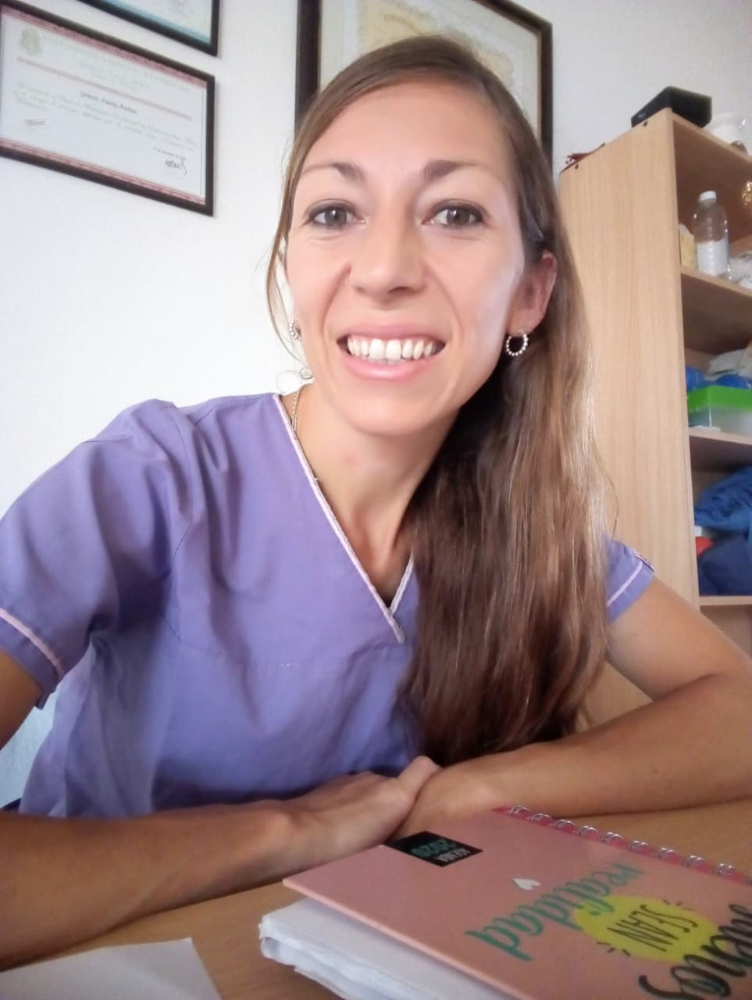

Gimnasia Terapéutica
Actividades físicas adaptadas y entrenamiento personalizado.
Te acompaño en cada etapa de tu recuperación para aliviar el dolor, mejorar tu movilidad y ayudarte a disfrutar nuevamente de una vida activa.

Tratamientos personalizados para mejorar tu salud física y calidad de vida.
Actividades físicas adaptadas y entrenamiento personalizado.
Vendajes funcionales para mejorar la recuperación.
Rehabilitación de lesiones musculares y articulares.
Masajes terapéuticos y drenaje linfático manual.
Tratamientos faciales y corporales.
Tecnología profesional para una piel suave.
Tratamiento eficaz para puntos gatillo y dolor muscular.

Años de experiencia
Soy Licenciada en Kinesiología y Fisioterapia, egresada de la Universidad Nacional de Córdoba en 2008. Desde entonces acompaño a pacientes en sus procesos de recuperación, combinando experiencia clínica, formación continua y un trato humano.
Mi objetivo es ayudarte a aliviar el dolor, recuperar tu movilidad y mejorar tu calidad de vida, diseñando tratamientos adaptados a tus necesidades.
La actualización permanente forma parte de mi compromiso profesional.
Universidad Nacional de Córdoba
Egreso 2008Más de 17 años acompañando a pacientes en instituciones de salud, centros de rehabilitación y consultorios privados.
San Francisco · Córdoba
Atención en Kinesiología y Fisioterapia.
San Francisco · Córdoba
Atención en Kinesiología y Fisioterapia.
Si tenés alguna consulta o querés solicitar un turno, completá el formulario o comunicate directamente por WhatsApp.
+54 03564 15-595800
fannygenero@gmail.com
San Francisco · Córdoba